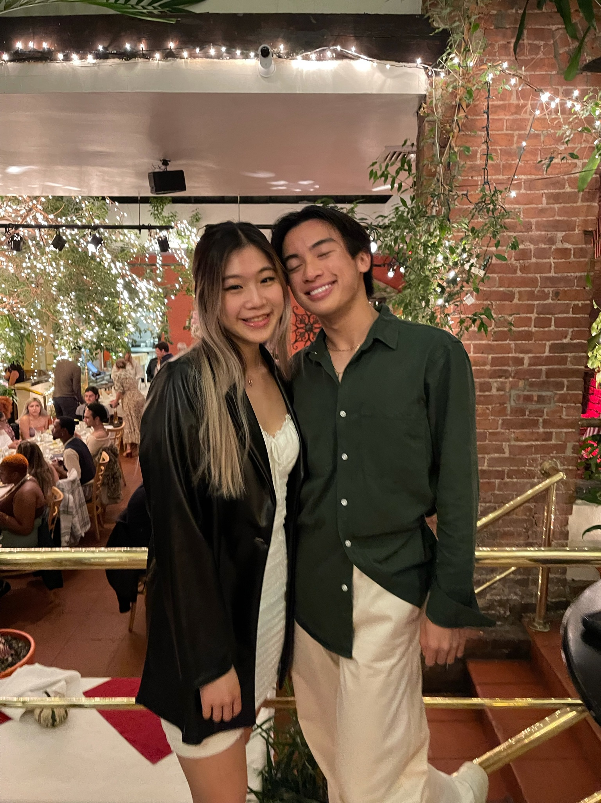
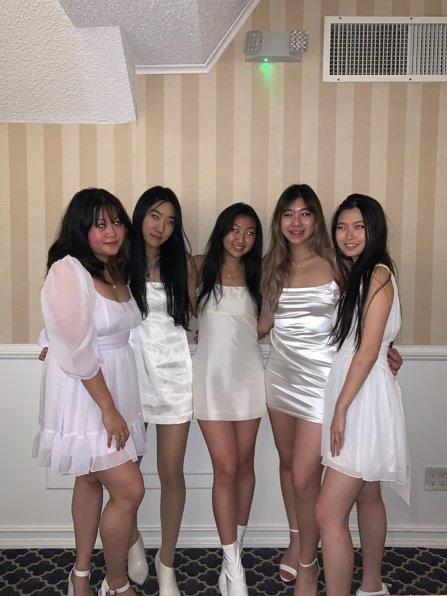

Moving to NYC after living in the suburbs of California for my entire life was one of the biggest changes and challenges I’ve faced these past few years. Having never step foot in New York before, I wondered if NYU was the right choice for me, but I trusted my gut and the next thing I knew, I was on the plane to the city that never sleeps (corny I know LOL). Here is everything I learned this past semester and tips and tricks to survive the city :
Finding Friends
Transitioning from high school to college, one of my biggest worries was how was I going to find a new support system 2,918 miles away from home. After looking through multiple NYU freshmen instagram pages and reaching out to new people, I finally met my closest and bestest friend in the city, Jake. Who knew one “hi you seem cool let’s be friends” text would lead to me a new friend, a new support system, my twin flame in the big city. My friendship with him is something I cherish to the ends of the earth, so this is a sign for YOU to start reaching out instead of waiting to be reached out to. Since there’s no campus/sense of community at NYU, you will not find friends if you stay in your dorm or keep to yourself all day. You have to be the one to step out of your comfort zone and reach out to others, because who knows, they might be your new best friend too.
In the third week of September, I randomly decided to rush for an asian interest sorority called aKDPhi. I know what you’re thinking…a sorority???? Greek life at nyu??? Unheard of. I had the same thoughts too LOL, but joining aKDPhi was one of the best decisions I’ve ever made in my college career. Not only did I find the most supportive and hard working community of strong, independent women, but it has also helped me grow so much as an individual and I’ve learned that I’m capable of more than I know. aKDPhi has provided me with my amazing line sisters who I’m so thankful to have met during my first semester because I truly don’t know what I would do without them (@ ash, em, yeon, and joce). I’m forever grateful for them because they’ve honestly changed my life and have guided me through this period of darkness and uncertainty. I did not think greek life was for me or that I would be a “sorority girl” in college, but it had led me to meeting my bestest friends (or sisters LOL) and I wouldn’t change it for the world? SO if there’s a club you want to a join or a sorority/frat you want to rush, do it, even if you are afraid or scared because that’s when you know that you are doing something right.
Classes
Don’t take 8 ams. That’s all I have to say-
Independence
Living in nyc makes you mature faster and more independent. One of my biggest fears was navigating the city and taking the subway (they also call it the train??) alone. I thought the subway system was going to be so confusing and scary, but it’s honestly really easy to navigate (with the help of google maps). And also since buildings are so close together, everything is at a walking distance….uber is not worth it UNLESS you are going home in the middle of the night.
It’s really easy to feel alone, but a reminder is that everyone also feels alone too, so you are not alone LOL. Always reach out to your friends for support and/or company.
Final Thoughts
At NYU, everyone seems like they know what they’re doing and it always feels like you’re never doing enough. When you have free time, it feels as if you’re wasting your time and you feel guilty for not being busy. Don’t feel that way because so many people are on the same boat as you. Everyone’s struggling trying to figure out who they are, who their friends are, trying to find an internship, etc. Everything happens for a reason, and when the time is right, everything will align for you
College is a time to restart and reinvent yourself. These people don’t know your past or who you were before, so take advantage of that and become the version you want to be. Do everything you didn’t get to do in high school because I have so many regrets for not full sending it through supposedly the most ‘prominent years’ of my life. I’m doing everything my 16 year old self didn’t get to experience and finally living the life I deserve.
Rejection is just redirection. You’re going to get rejected countless times throughout your college career – club positions, internships, switching majors, etc – and it’s okay to feel sad or disappointed in yourself, but instead of spiraling into sadness, use it as a drive to be better and do better. You’re one rejection closer to an acceptance <3
After my first semester, new york has honestly grown on me. I’ve gotten the chance to grow as an individual and it’s starting to feel a little more like home here. Is it still atrociously dangerous to be living here as an Asian American and a women? Yes and it sucks, but you only live once.